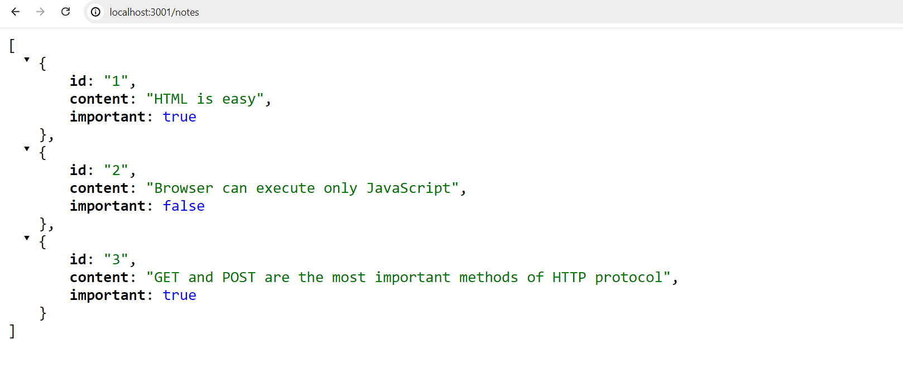
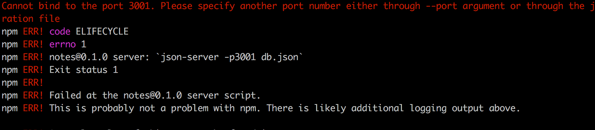
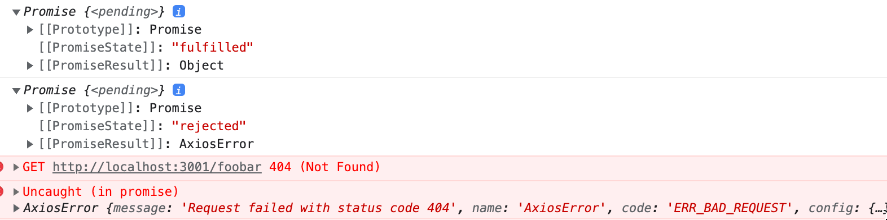
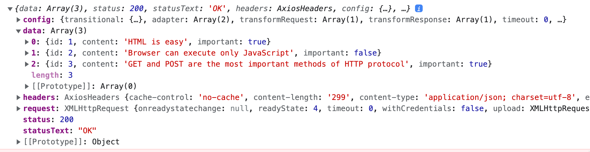
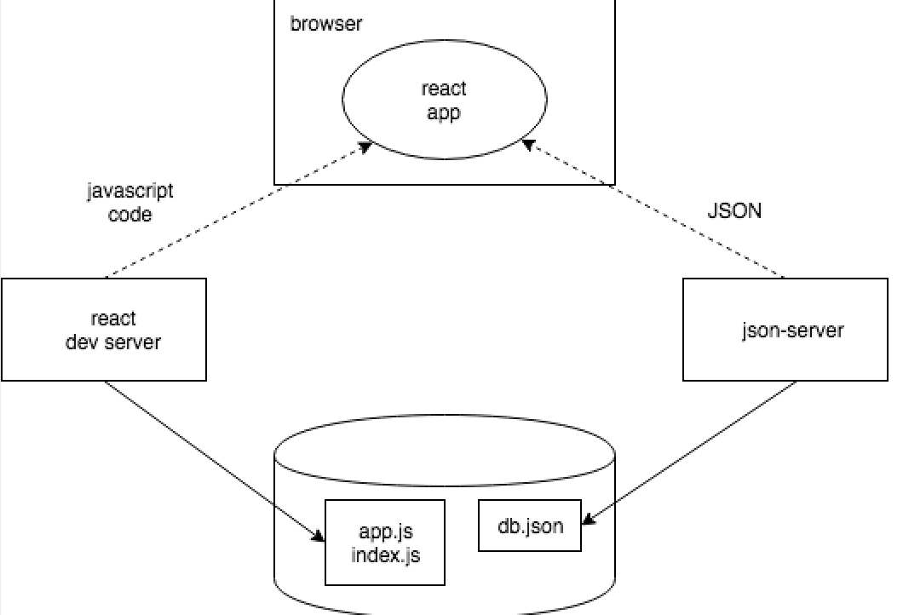

这段时间，我们只致力于“前端”，即客户端（浏览器）的功能。我们将在本课程的第三章节中开始研究“后端”，即服务端的功能。尽管如此，我们现在将朝着这个方向迈出一步，熟悉浏览器中执行的代码是如何与后端通信的。
让我们使用一个用于软件开发过程中的工具JSON Server来作为我们的服务端。
在之前的notes项目的根目录下创建一个名为db.json的文件，内容如下：
{
"notes": [
{
"id": "1",
"content": "HTML is easy",
"important": true
},
{
"id": "2",
"content": "Browser can execute only JavaScript",
"important": false
},
{
"id": "3",
"content": "GET and POST are the most important methods of HTTP protocol",
"important": true
}
]
}
你可以在应用的根目录下运行以下_npx_命令来启动JSON Server（_npx_无需额外安装）：
npx json-server --port 3001 db.json
JSON Server默认在端口3000上开始运行，但我们现在使用另一个端口3001。让我们在浏览器中导航到http://localhost:3001/notes这个地址。我们可以看到JSON Server以JSON格式提供我们之前写到文件中的各笔记：

如果你的浏览器不能格式化显示JSON数据，那就安装一个合适的插件，例如JSONView，让你的生活更轻松。
接下来，我们的目标是将笔记保存到服务端，在这里指保存到json-server。React代码会从服务端获取笔记并渲染到屏幕上。每当应用中添加新笔记时，React代码也会将其发送到服务端，使新笔记能在“内存”中持久保存。
json-server将所有数据存储在服务端的db.json文件中。在实际生产中，数据会存储在某种数据库中。然而，json-server是一个方便的工具，能让我们在开发阶段使用服务端的功能，而不需要进行任何编程。
我们将在本课程的第3章节中进一步熟悉实现服务端功能的原则。
浏览器作为运行环境
我们的第一个任务是从地址http://localhost:3001/notes获取已存在的笔记到我们的React应用中。
在第0章节的示例项目中，我们已经学习了一种使用JavaScript从服务端获取数据的方法。示例中的代码是使用XMLHttpRequest来获取数据的，也就是使用XHR对象来进行HTTP请求。这是一种1999年引入的技术，现在每种浏览器都已经支持了很长时间。
但不再推荐使用XHR了，浏览器已经广泛支持fetch方法，该方法基于所谓的Promise，而不是XHR使用的事件驱动模型。
作为第0章节的提醒（如果没有迫切的理由，应该记住不要使用），使用XHR获取数据的方式如下：
const xhttp = new XMLHttpRequest()
xhttp.onreadystatechange = function() {
if (this.readyState == 4 && this.status == 200) {
const data = JSON.parse(this.responseText)
// handle the response that is saved in variable data
}
}
xhttp.open('GET', '/data.json', true)
xhttp.send()
在最开始时，我们给代表HTTP请求的xhttp对象注册了一个事件处理函数，每当xhttp对象的状态发生变化时，JavaScript运行时就会调用事件处理函数。如果状态的变化意味着对请求的响应已经到来，那么数据就会得到相应的处理。
值得注意的是，尽管事件处理函数的代码是在请求被发送到服务端之前定义的，事件处理函数中的代码将在以后的时间点执行。因此，代码不是“从上到下”同步执行的，而是异步执行的。JavaScript会在某个时间点调用注册用于请求的事件处理函数。
同步的请求方式常见于Java编程中，下面是一个同步请求的例子（注意，这些Java代码并不能实际运行，只是举个例子）：
HTTPRequest request = new HTTPRequest();
String url = "https://studies.cs.helsinki.fi/exampleapp/data.json";
List<Note> notes = request.get(url);
notes.forEach(m => {
System.out.println(m.content);
});
在Java中，代码逐行执行，会停下来等待HTTP请求，也就是会等待命令_request.get(...)_完成。命令返回的数据，在这里是笔记，会随后被存储在一个变量中，然后我们开始以我们想要的方式操作数据。
相比之下，JavaScript引擎，或者叫运行环境，遵循异步模型。原则上，这要求所有的IO操作（除了一些例外）都以非阻塞方式执行。也就是说，在调用一个IO函数后，代码会立即继续执行，而不等待IO操作返回。
当一个异步操作完成后，或者更确切地说，在完成后的某个时间点，JavaScript引擎会调用注册用于该操作的事件处理函数。
目前，JavaScript引擎是单线程的，这意味着它们不能并行地执行代码。因此，在实践中需要使用非阻塞模型来执行IO操作。否则，在从服务端获取数据等过程中，浏览器会“冻住”。
JavaScript引擎的这种单线程特性的另一个结果是，如果某些代码的执行占用了大量的时间，浏览器就会在执行的过程中卡住。如果我们在我们应用的顶部添加以下代码：
setTimeout(() => {
console.log('loop..')
let i = 0
while (i < 50000000000) {
i++
}
console.log('end')
}, 5000)
5秒内一切都正常。然而，当定义为setTimeout参数的函数运行时，浏览器将在长循环的执行过程中被卡住。甚至在执行循环的过程中也不能关闭浏览器标签页，至少在Chrome中不能。
为了使浏览器保持响应性，即能够以足够的速度对用户的操作作出连续的反应，代码逻辑需要做到没有任何计算会花费太长时间。
互联网上可以找到大量关于这个主题的额外资料。对这一主题的一个特别清晰的演讲是Philip Roberts的演讲What the heck is the event loop anyway?。
在今天的浏览器中，可以借助所谓的Web Worker来并行地运行代码。然而，单个浏览器窗口的事件循环仍然只由单线程处理。
npm
让我们回到从服务端获取数据的话题上来。
我们可以使用之前提到的基于Promise的函数fetch来从服务端获取数据。fetch是一个伟大的工具。它是标准化的，被所有现代浏览器支持（除了IE）。
也就是说，我们将使用axios库来实现浏览器和服务端之间的通信。它的功能类似于fetch，但使用起来更顺手一些。使用axios的另一个很好的理由是这么做能让我们熟悉向React项目中添加外部库，即npm包。
现在，几乎所有JavaScript项目都是用node包管理器，也就是npm（node package manager）来定义的。使用Vite创建的项目也遵循npm的格式。项目使用npm的一个明显标志是位于项目根目录的package.json文件：
{
"name": "part2-notes-frontend",
"private": true,
"version": "0.0.0",
"type": "module",
"scripts": {
"dev": "vite",
"build": "vite build",
"lint": "eslint .",
"preview": "vite preview"
},
"dependencies": {
"react": "^18.3.1",
"react-dom": "^18.3.1"
},
"devDependencies": {
"@eslint/js": "^9.17.0",
"@types/react": "^18.3.18",
"@types/react-dom": "^18.3.5",
"@vitejs/plugin-react": "^4.3.4",
"eslint": "^9.17.0",
"eslint-plugin-react": "^7.37.2",
"eslint-plugin-react-hooks": "^5.0.0",
"eslint-plugin-react-refresh": "^0.4.16",
"globals": "^15.14.0",
"vite": "^6.0.5"
}
}
现在，我们最感兴趣的是dependencies部分，因为它定义了项目有哪些依赖项，即外部库。
我们现在想使用axios。理论上，我们可以直接在package.json文件中定义这个库，但最好从命令行中安装它。
npm install axios
NB _npm_命令应该总是在项目根目录下运行，也就是可以找到package.json文件的地方。
axios现在被包含在其他依赖项中：
{
"name": "part2-notes-frontend",
"private": true,
"version": "0.0.0",
"type": "module",
"scripts": {
"dev": "vite",
"build": "vite build",
"lint": "eslint .",
"preview": "vite preview"
},
"dependencies": {
"axios": "^1.7.9", // highlight-line
"react": "^18.3.1",
"react-dom": "^18.3.1"
},
// ...
}
除了将axios添加到依赖项中，npm install命令还会下载库的代码。和其他依赖项一样，代码可以在根目录下的node_modules目录中找到。你可能已经注意到，node_modules包含了相当多有趣的东西。
让我们再添加一个包。执行以下命令，将json-server安装为开发依赖项（只在开发过程中使用）：
npm install json-server --save-dev
并在package.json文件的scripts部分做一个小小的补充：
{
// ...
"scripts": {
"dev": "vite",
"build": "vite build",
"lint": "eslint .",
"preview": "vite preview",
"server": "json-server -p 3001 db.json" // highlight-line
},
}
现在我们可以方便地，不用定义任何参数，在项目根目录下用命令启动json-server：
npm run server
我们将在课程的第三章节中进一步熟悉_npm_工具。
注意 在启动新的json-server之前，必须先终止之前启动的json-server；否则就会报错：

错误信息中的红色字告诉我们了问题：
Cannot bind to port 3001. Please specify another port number either through --port argument or through the json-server.json configuration file
我们可以看到，应用无法将自己绑定到端口。原因是3001端口已经被先前启动的json-server占用。
我们用了两次_npm install_的命令，但略有不同：
npm install axios
npm install json-server --save-dev
在参数上有细微差别。axios被安装为应用的运行时依赖项，因为程序的执行需要该库的存在。另一方面，json-server被安装为开发依赖项（--save-dev），因为程序本身并不需要它。它是用来在软件开发期间提供帮助的。在课程的下一部分会有更多关于不同依赖项的内容。
axios和Promise
现在我们已经准备好使用axios了。今后，都假定json-server在3001端口运行。
注意：为了能够同时运行json-server和你的React应用，你可能需要使用两个终端窗口。一个用于保持json-server运行，另一个用于运行我们的React应用。
这个库可以通过和其他库一样的方式使用，即使用恰当的import语句。
在文件main.jsx中添加以下内容：
import axios from 'axios'
const promise = axios.get('http://localhost:3001/notes')
console.log(promise)
const promise2 = axios.get('http://localhost:3001/foobar')
console.log(promise2)
如果你在浏览器中打开http://localhost:5173，控制台应该会打印出以下内容

axios的_get_方法返回一个Promise。
Mozilla网站上的文档对Promise有如下说明：
Promise 是一个对象，它代表了一个异步操作的最终完成或者失败。
换句话说，一个Promise是一个代表异步操作的对象。一个Promise可以有三种不同的状态：
- Promise在队列中（pending）：这意味着Promise对应的异步操作尚未完成，还没有最终值。
- Promise已完成（fulfilled）：它意味着操作已经完成，已得到最终值，一般代表操作成功。
- Promise被拒绝（rejected）：这意味着一个错误阻止了最终值的确定，一般代表操作失败。
关于Promise还有许多细节，但目前而言理解这三种状态对我们来说就足够了。如果你想，你也可以在Mozilla的文档中了解更多。
我们例子中第一个Promise已完成，代表_axios.get('http://localhost:3001/notes')_请求成功。然而，第二个Promise被拒绝，并且控制台告诉了我们原因。看起来我们试图向一个不存在的地址发送HTTP GET请求。
每当我们想访问Promise所代表的操作的结果，我们必须为Promise注册一个事件处理函数。这可以通过方法then实现：
const promise = axios.get('http://localhost:3001/notes')
promise.then(response => {
console.log(response)
})
以下内容将被打印到控制台：

JavaScript运行环境调用由then方法注册的回调函数，为其提供一个response对象作为参数。response对象包含与HTTP GET请求响应相关的所有必要数据，包括返回的数据、状态代码和标头。
通常没有必要将Promise对象存储在一个变量中，而通常是将then方法调用链接到axios方法调用后，这样then方法就直接跟在axios方法后面：
axios.get('http://localhost:3001/notes').then(response => {
const notes = response.data
console.log(notes)
})
回调函数现在接收响应中包含的数据，将其存储在一个变量中，并将笔记打印到控制台。
将链式方法调用格式化为更可读的一种方法是把每个调用放在单独的一行：
axios
.get('http://localhost:3001/notes')
.then(response => {
const notes = response.data
console.log(notes)
})
服务端返回的数据是纯文本，基本上就是一个长字符串。axios库仍然能够将数据解析成一个JavaScript数组，因为服务端已经用content-type标头指定数据格式为application/json; charset=utf-8（见前一张图片）。
我们终于可以开始使用从服务端上获取的数据了。
让我们尝试从本地服务端上请求笔记，并渲染它们，作为最初的App组件。请注意，这种方法有很多问题，因为我们只有在成功获得一个响应时才会渲染整个App组件。
import ReactDOM from 'react-dom/client'
import axios from 'axios'
import App from './App'
axios.get('http://localhost:3001/notes').then(response => {
const notes = response.data
ReactDOM.createRoot(document.getElementById('root')).render(<App notes={notes} />)
})
这种方法在某些情况下是可以的，但它有些问题。让我们把获取数据的代码移到App组件中。
然而，不明显的是，axios.get命令应该放在组件中的什么地方。
Effect Hook
我们已经使用了React16.8.0版本中引入的State Hook，它为定义为函数的React组件——所谓的函数式组件提供状态。16.8.0版本还引入了Effect Hook这个新功能。按照官方文档的说法：
Effect允许组件连接到外部系统并与之同步。
这包括处理网络、浏览器、DOM、动画、使用不同UI库编写的小部件以及其他非React代码。
因此，当要从服务端获取数据时，Effect Hook恰好是正确的工具。
让我们从main.jsx中移除获取数据的代码。既然我们要从服务端获取笔记，就不再需要将数据作为props传递给App组件。所以main.jsx可以简化为：
import ReactDOM from "react-dom/client";
import App from "./App";
ReactDOM.createRoot(document.getElementById("root")).render(<App />);
App组件的变化如下：
import { useState, useEffect } from 'react' // highlight-line
import axios from 'axios' // highlight-line
import Note from './components/Note'
const App = () => { // highlight-line
const [notes, setNotes] = useState([]) // highlight-line
const [newNote, setNewNote] = useState('')
const [showAll, setShowAll] = useState(true)
// highlight-start
useEffect(() => {
console.log('effect')
axios
.get('http://localhost:3001/notes')
.then(response => {
console.log('promise fulfilled')
setNotes(response.data)
})
}, [])
console.log('render', notes.length, 'notes')
// highlight-end
// ...
}
我们还添加了一些有用的打印语句来阐明执行的进程。
控制台将打印出这些：
render 0 notes
effect
promise fulfilled
render 3 notes
首先，定义组件的函数主体被执行，组件被首次渲染。这时候打印了render 0 notes，意味着还没有从服务端获取数据。
下面的函数，用React的说法就是Effect：
() => {
console.log('effect')
axios
.get('http://localhost:3001/notes')
.then(response => {
console.log('promise fulfilled')
setNotes(response.data)
})
}
在渲染后会立即执行。函数的执行结果是effect被打印到控制台，然后命令axios.get开始从服务端获取数据，并注册以下函数作为该操作的事件处理函数：
response => {
console.log('promise fulfilled')
setNotes(response.data)
})
当数据从服务端到达时，JavaScript运行时调用注册的事件处理函数，该函数将promise fulfilled打印到控制台，并用函数setNotes(response.data)将从服务端收到的笔记存储到状态中。
一如既往，调用会更新状态的函数会触发组件的重新渲染。结果，render 3 notes被打印到控制台，而从服务端获取的笔记被渲染到屏幕上。
最后，让我们来看看整个Effect Hook的定义：
useEffect(() => {
console.log('effect')
axios
.get('http://localhost:3001/notes').then(response => {
console.log('promise fulfilled')
setNotes(response.data)
})
}, [])
让我们以稍微不同的方式重写代码。
const hook = () => {
console.log('effect')
axios
.get('http://localhost:3001/notes')
.then(response => {
console.log('promise fulfilled')
setNotes(response.data)
})
}
useEffect(hook, [])
现在我们可以更清楚地看到，函数useEffect需要两个参数。第一个参数是一个函数，即Effect本身。根据文档：
默认情况下，Effect会在每次完成渲染后运行，但你可以选择只在某些值发生变化时启动它。
所以在默认情况下，每当渲染完组件后，就会运行Effect。然而，在我们的例子中，我们只想在第一次渲染时执行Effect。
useEffect的第二个参数用于指定Effect的运行频率。如果第二个参数是一个空的数组[]，那么Effect就只在组件的第一次渲染时运行。
除了从服务端获取数据之外，Effect Hook还有许多可能的使用场景。然而对我们来说，目前而言，这一用途已经足够了。
回想一下我们刚才讨论的事件的顺序。代码的哪些部分被运行？以什么顺序？什么时候会运行？理解事件的顺序是至关重要的！
注意我们也可以这样写Effect函数的代码：
useEffect(() => {
console.log('effect')
const eventHandler = response => {
console.log('promise fulfilled')
setNotes(response.data)
}
const promise = axios.get('http://localhost:3001/notes')
promise.then(eventHandler)
}, [])
一个事件处理函数的引用被赋值给变量eventHandler。axios的get方法返回的Promise被存储在变量promise中。回调函数的注册是通过把eventHandler变量，即事件处理函数的引用，作为Promise的then方法的参数来完成的。通常没有必要把函数和Promise赋值给变量，用更紧凑的方式来表示，如下所示，就足够了。
useEffect(() => {
console.log('effect')
axios
.get('http://localhost:3001/notes')
.then(response => {
console.log('promise fulfilled')
setNotes(response.data)
})
}, [])
我们的应用中仍然有一个问题。当添加新的笔记时，新笔记没有存储到服务端。
到目前为止，应用的代码全部可以在github的part2-4分支找到。
开发的运行环境
整个应用的配置已经逐渐变得复杂。让我们回顾一下发生了什么，以及在哪里发生。下面的图片描述了应用的构成

构成我们React应用的JavaScript代码在浏览器中运行。浏览器从React dev server，即运行命令npm run dev后启动的应用中获取JavaScript。dev-server将JavaScript转换为浏览器可以理解的格式。这个过程中会将不同文件的JavaScript拼接成一个文件。我们将在课程的第7章节更详细地讨论dev-server。
浏览器中运行的React应用从运行在机器3001端口的json-server获取JSON格式的数据。我们查询数据的服务端——json-server——从文件db.json中获取数据。
开发到现在，应用的所有部分恰好都在软件开发者的机器，或者叫localhost上。当将应用部署到互联网上时，情况又会发生变化。我们将在第3章节做这件事。